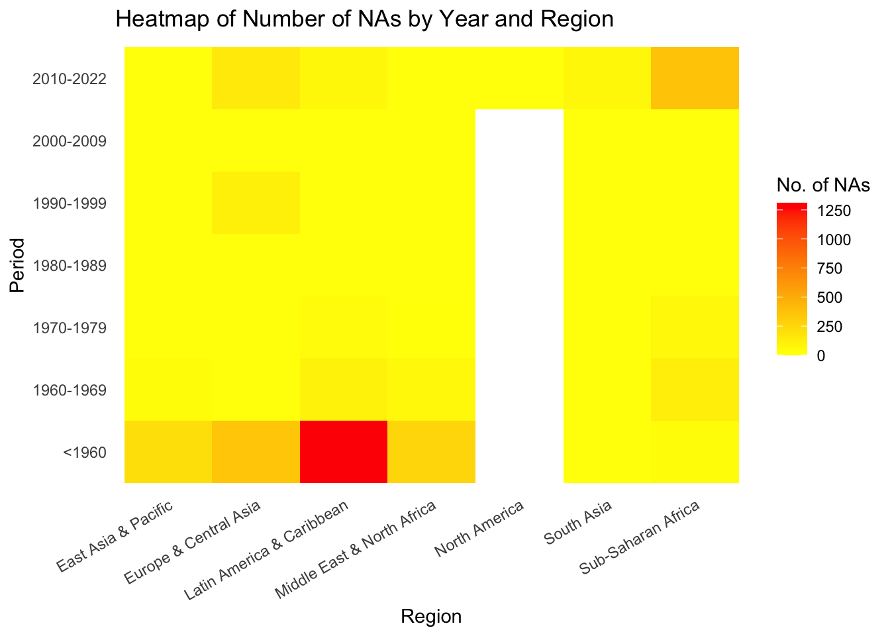

The CDP data is collected by the Cline Center for Advanced Social Research at the University of Illinois Urbana-Champaign. It was a collaborative work by Buddy Peyton, Joseph Bajjalieh, Dan Shalmon, Michael Martin, Jonathan Bonaguro, and Scott Althaus.
The CDP data is about coup instances. For each instance, it records information concerning
when and where it took place,
the type of its initiator (e.g. military, rebels),
the coup outcome (realized or not, or it is just a thwarted conspiracy),
the fate of the deposed leader (e.g. jailed, fled).
In its latest version, this dataset identifies 981 coup instances with 22 attributes from 1945 to 2022 and is in the CSV format. On average, new instances and attributes are updated every 6 months, starting from November 16th 2022 to February 24rd 2023.
2.1.2 The REIGN Data
The REIGN data is collected by Curtis Bell, Clayton Besaw, and Matthew Frank in the CSV format. In general, it contains data concerning
the political leadership,
the regime characteristics,
the electoral outcomes
for every country around the globe since January 1950. Each aspect is described through numerous measures in the dataset, and in total, this massive dataset has 137,219 observations with 41 descriptive features by January 2021. Some noticeable numerical features are:
age: the national leader’s age
tenure_months: the number of months a leader has been in power
lastelection: an inverted decay function that measures the time since the last election for the leadership position of the country
dem_duration: the logged number of months under democratic ruling
political_violence: the relative level (Z-score) of political violence experienced within the borders of a country for that year
precip: the Standardized Precipitation Index (SPI) for each country month
couprisk: an estimated probability of the risk of a military coup attempt
Notice that the REIGN is not coup-specific. It is a supporting source that helps us better describe the political ecosystem of a country experiencing coups. So far, this dataset has been updated for 30 times starting from February 7th, 2019 to August 3rd, 2021.
2.1.3 References
You may access more informative data descriptions with codebooks for the CDP and the REIGN data (download links provided at the end of both webpages), and you may download the latest data to your local environment for the CDP and the REIGN data.
Note: due to maintenance issues, the REIGN data cannot be downloaded directly from their website but can be obtained through their GitHub repo.
2.1.4 Data Import
We have made a copy of the datasets and saved them in the ./data/raw folder of this project. This makes us - as well as you - to import the data.
As mentioned, the REIGN data serves as a supporting role. As a preprocessing step, we will merge the REIGN data with the CDP data using keys country, year, and month and keep instances in the CDP data unique. You may find the merged data in the ./data/merged folder.
Code
# read both data from the project repocdp <-read.csv("./data/raw/Coup data 2.1.2.csv")reign <-read.csv("./data/raw/REIGN_2021_8.csv")# merged data using keysmerged <- cdp %>%left_join(reign, by =c("cowcode"="ccode", "year"="year", "month"="month")) %>%# duplicates may occur if leadership changed in the year of coupsdistinct(coup_id, .keep_all =TRUE) %>%select(-country.y) %>%rename(country = country.x)# export the merged datawrite.csv(merged, file ="./data/merged/coup_data.csv", row.names =FALSE)merged <-read.csv("./data/merged/coup_data.csv")
Notice that, because observations in both datasets can be dated long ago, it can be expected that there will be many missing values, and they also depend on the geographical location - countries might not be able to provide data for particular measures at some time. In addition, while our data describes the political aspects of countries in a comprehensive manner, bear in mind that coups are also significantly related to economic and social attributes. Although our data provides no information concerning these, feel free to be inspired and add more features for further studies!
2.2 Research Plan (TODO)
We merge the two datasets to provide a more comprehensive picture on the political backgrounds of the coups. Using a left join from the REIGN data to the CDP data, we introduce additional information such as the type of government, coup risk, level of political violence, among many others at the time of the coup. With the merged dataset, we seek to answer the questions posed in the introduction in the following ways:
Data Exploration: We will visualize the distribution of all features using a variety of plots – barplots, scatterplots, Cleveland dot plots – as appropriate to gain an initial understanding to the data we are working with. This will allow us to decide what features to pay special attention to in the following steps.
Clustering: We will apply PCA to the numerical features mentioned above (added from the REIGN) data to perform dimension reduction before drawing the biplot. We will then be able to see clusters of the different types of government at the time of the coups and identify any outliers. Depending on whether the clusters are clear, we will also be able to infer if the type of government is highly correlated with coups happening. On the other hand, the biplot also provides insight into highly correlated and uncorrelated features, if there are any.
Time series analysis: Since the data we have range from 1945 to 2020, it provides a great opportunity for us to conduct time series analysis. We plan to at least group the coups by type of government and by region, respectively, to see if the number of coups changed over the span of 75 years. We will also conduct additional time series analysis for any notable factors that stand out from the previous biplot.
2.3 Missing Value Analysis
We start with exploring the distribution of missing values in our data.
Code
plot_missing(merged, num_char =2)
We noticed that the data has complete records of the majority instances. Around 40% of the instances only miss couprisk and pctile_risk data, while less than 10% of the instances miss majority of attribute data. In addition, around half of the instances do not have couprisk and pctile_risk data.
According to the codebook, couprisk is a probability estimated using machine learning and stacking algorithms, and this measure started in January, 1975. At the meantime, pctile_risk corresponds to the percentile risk for each country’s estimated risk of a military coup attempt, and therefore, couprisk and pctile_risk are correlated in their missing patterns.
Similarly, let’s also observe the missing patterns among the continuous data we defined in the data section, as we will fit PCA on them to analyze how regime types are compared with each other.
We found that missing values are common in this dataset. Did they occur by chance or follow some patterns? We suspect they are related to the time and geographical location - for early observations, some measures such as couprisk were not yet effective, and particular countries might not take some measures locally and thus have no records.
To prove that our hypothesis is valid, we plot a heatmap of number of missing values by period and region. We determine the count of missing values for a specific period and region by adding up the number of missing values for instances of coups that occurred in that region during the given period.
Code
nas_by_year <- merged %>%mutate(cowcode =case_when( cowcode ==260~255, cowcode ==340~345, cowcode ==393~365,TRUE~ cowcode ), year =case_when( year <1960~"<1960", year <1970~"1960-1969", year <1980~"1970-1979", year <1990~"1980-1989", year <2000~"1990-1999", year <2010~"2000-2009",TRUE~"2010-2022" )) %>%mutate(region =countrycode(cowcode, origin ="cown",destination ="region")) %>%mutate(na_count =rowSums(is.na(.))) %>%group_by(year, region) %>%summarize(sum_nas =sum(na_count)) %>%select(all_of(c("year", "region", "sum_nas")))theme_heat <-theme_classic() +theme(axis.line =element_blank(),axis.ticks =element_blank(),axis.text.x =element_text(angle =30, hjust =1))ggplot(nas_by_year, aes(x = region, y = year)) +geom_tile(aes(fill = sum_nas)) +scale_fill_gradient(low ="yellow", high ="red") +labs(title ="Heatmap of Number of NAs by Year and Region",x ="Region",y ="Period",fill ="No. of NAs") + theme_heat

It turned out the our hypothesis is correct - coups took place in Latin America and Caribbean before 1960 explain most of the missing values. During this time period, coups happened outside of North America, South Asian, and Sub-Saharan Africa also contributed to the total count.
Why are there blank areas? Because there are no coups in Canada and the United States until 2021. What happened in 2021? Check January 6 United States Capitol attack.